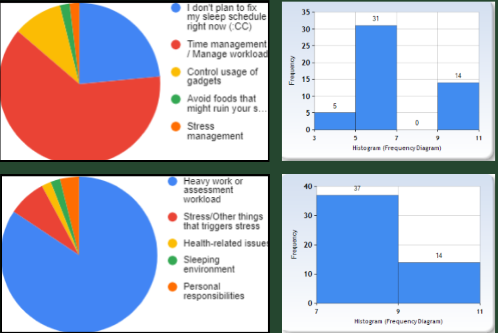

Qualitative Variables (top to bottom):
Chosen strategy to improve sleeping habit: &
Reason for unhealthy number of sleeping hours:
red - 62.7% | 7.8%
orange - 2.0% | 3.9%
yellow - 9.8% | 2.0%
green - 2.0% | 2.0%
blue - 23.5% | 84.3%
Quantitative Variables (top to bottom):
Maximum number of sleeping hours per day: &
Maximum number of expected sleeping hours:
3-5 hours: 5 people | 7-9 hours: 37 people
5-7 hours: 31 people | 9-11 hours: 14 people
7-9 hours: 0 people
9-11 hours: 14 people
Conclusions:
To sum it all up, the biggest factors of the qualitative variables,
heavy work or assessment workload and time management are related.
This tells us that the students agree with the fact that they need to
improve their time management skills in order to manage assessment or work
responsibiities without risking their self-care time which includes rest.
The histograms tell us that most students are aware of their sleeping hours
and are still making sure to get even a little rest.
They want to make sure that their body will be satisfied with the amount of sleeping hours
that it will get. Some don't want to oversleep as much as possible but some want to get
more sleeping hours as much as possible.